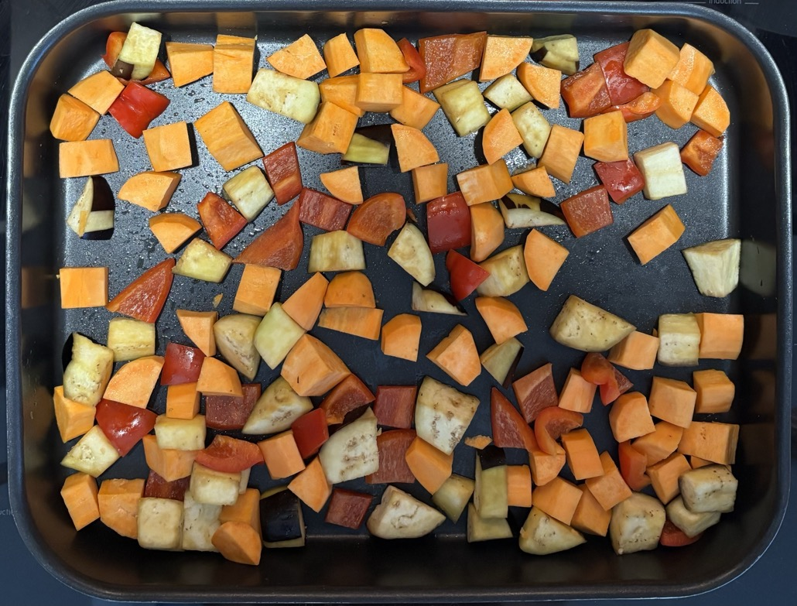

Chicken curry
Sauces
- Use Spice Taylor kits
Whole spices
- Don't use these whole spices in the curry, they're difficult to remove and don't taste good if you bite them whole.
- If they come with the cuury kit then cook these with the rice instead
- Cardamom pods
- Cloves
Rice
- Use basmati
- 70g uncooked = 1 portion
- Water = rice * 2.5
Veg
- If only using peppers then cook with the onions in the pan
- Coat veg with before roasting
- 1 tbsp vegetable oil
- Roast 1-3 of these till cooked at 200°C
- squash 40 mins
- aubergine 30 mins, stripped
- sweet potato 30 mins, 1cm pieces
- pepper 30 mins
- cauliflower 30 mins
- mushrooms 15 mins
Curry
- Fry for 5 mins
- 2 medium onions
- 1 tbsp vegetable oil
- Add and cook for 5 mins
- 400-500g chicken in 1-3" pieces
- Add and cook for 3 mins
- sauce 1
- Add and cook for 10 mins
- sauce 2
- 1 tin coconut milk or 250g passata
- 1 tsp cornflour mixed with cold water
- roasted veg
- Add and stir in (to wilt, doesn't need cooking)
- 100g spinach (optional)
Serving
- 4 portions
- With
- rice
- naan (optional)
- mango chutney (optional)
Pics
